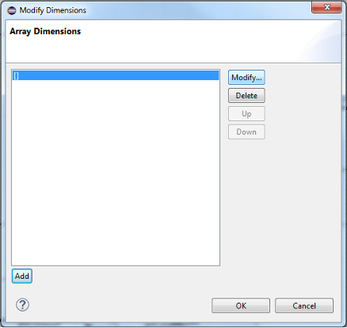

The graphical editor supports creating arrays for appropriate features and subcomponents.
When viewing a component type diagram or component implementation diagram, a feature or subcomponent array can be created, respectively.
Right-click on the appropriate element.
Select Modify Dimensions... from the context menu.
From the Modify Dimensions dialog, select Add, then Modify.
From the Modify Dimension dialog, select desired type and value.

Select OK. The array dimensions will appear on the element.
To edit an array, right-click on a feature or subcomponent array and select Modify Dimensions... from the context menu.
From the Modify Dimensions dialog, select Add, then Modify.
From the Modify Dimension dialog, select desired type and value.
Select OK. The new array dimension will appear.
From the Modify Dimensions dialog, select the desired dimension and select Up or Down.